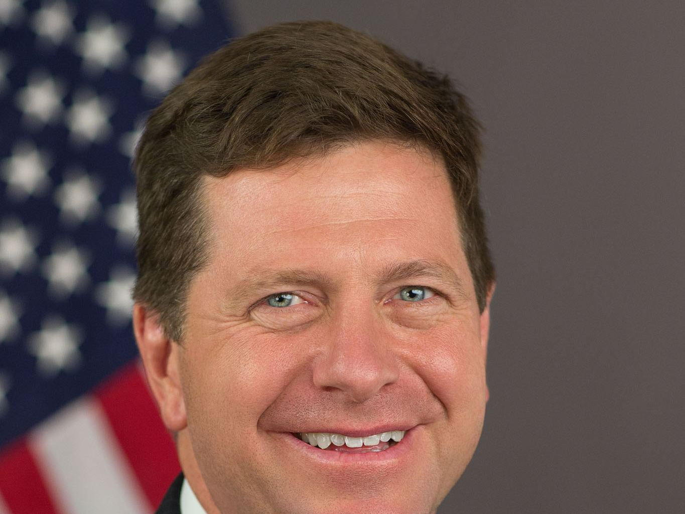

美国司法部成立 Super Intelligence Task Force（DOJ-SITF）：由 Woodward 与 Weiss 牵头，对接白宫 SI Force 并追究恶意滥用


美国司法部于 2026 年 11 月 5 日宣布成立 Super Intelligence（SI）Task Force（DOJ-SITF），由 Associate Attorney General Stanley Woodward 与 Associate Deputy Attorney General Stephen Weiss 牵头。新闻稿称，任务组旨在确保美国在超级智能领域的领导地位不被外国国家及国家支持行为体、跨国犯罪组织，以及从事欺诈或其他违法活动的个人或公司通过滥用 SI 所损害。
DOJ-SITF 由 Woodward 与 Weiss 牵头，声明将与 SI Force 主席 Jay Clayton 协同
司法部长 Todd Blanche 表示，司法部将与 SI Force 主席 Jay Clayton 协作，识别并起诉以恶意方式利用 SI 侵害美国纳税人、关键基础设施或国家安全的人。Weiss 强调，部门有责任利用执法工具遏制不当使用、强化 SI 风险与响应的常态报告，并促使企业建立有力内部控制，使 SI 技术按预期运行。
新闻稿附有备忘录链接，细节以备忘录与后续执法实践为准。此前白宫侧已有与 Jay Clayton 相关的「超级智能力量」安排；本稿只转述司法部本次公开声明，不评述其与既有 AI 任务组的组织关系。
摘记，不是官方媒体。组织名称、负责人与使命表述均出自司法部新闻稿；具体管辖边界与案件类型以备忘录及后续执法为准。